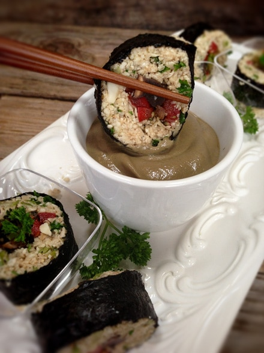
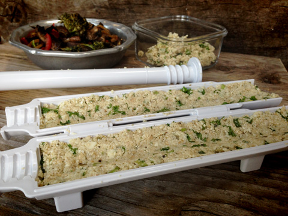
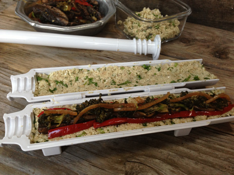
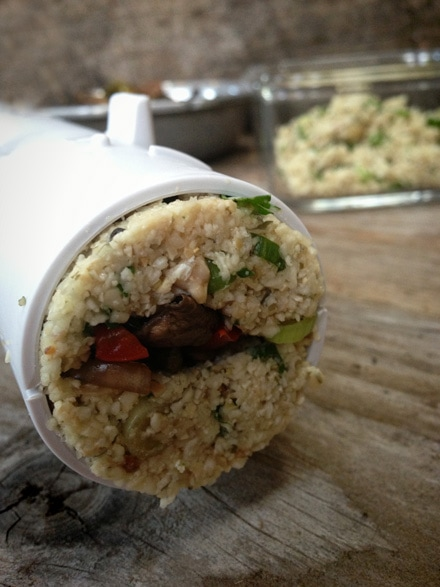
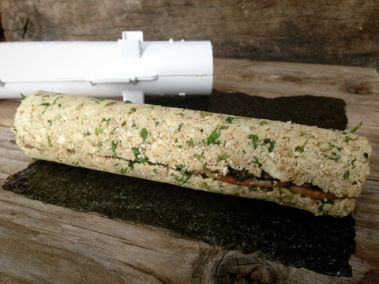
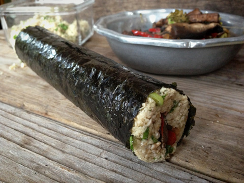
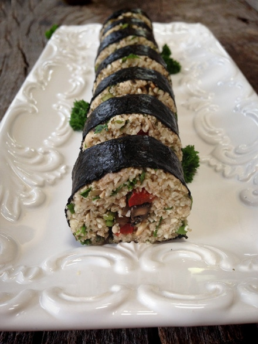

Home of the Brave Sushi Roll with Brown Gravy Dipping Sauce
I love leftovers. Most people don’t, but I find it to be a great opportunity to breathe new life into already-made dishes. I mean shoot, all the hard work is already done!
The components are just waiting for your creative mind. This is a result of my creative mind. :) I giggled the whole time I took the photos. I mean, it looked delicious, it tasted delicious, I guess the thought of a savory home-prepared meal stuffed into a nori roll and then dipping it in soy sauce brown gravy… just struck my funny bone.
And in this home we are brave enough to feed this to a true sushi lover… well, they just might wrinkle their nose or then again, maybe not.
I used a fun little gadget that I bought ooooh…. 5 years ago but never used. It was lost in one of those lazy-susan-twilight-zone- cabinets. Your smiling… you have one of those too, don’t you? Anyway, I found it! It is called Sushezi. I have rolled a few nori rolls in my day, but I have to tell you that this was so easy and fun to use, that I have vowed to never put it back in the lazy-susan-twilight-zone-cabinet!
You don’t have to own one of these by any means in order to make sushi rolls. I sort of liken it to the spiralizer. You don’t have to own one to make zucchini noodles, you can use a potato peeler, but a spiralizer is just so much more fun and easy for kids to use too. This is the same. If you have little ones, having them roll conventional sushi rolls could be challenging for their little paws. But this… they can do! 美味しい!! ( that is supposed to be delicious in Japanese. I hope Google translate didn’t let me down. Haha)
Recipe mashup:







© AmieSue.com